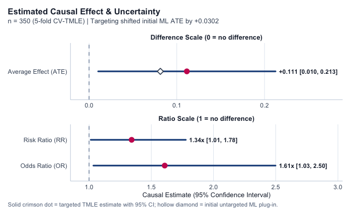
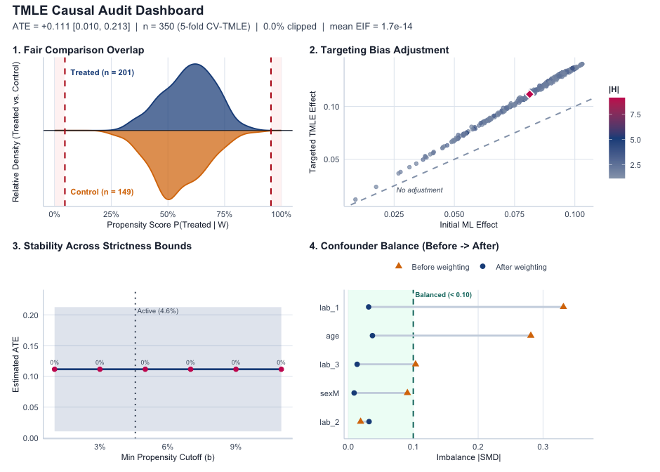

tidytmle brings Cross-Fitted Targeted Maximum Likelihood Estimation (CV-TMLE) to the tidymodels ecosystem as a clear, human-centered causal inference workflow: declare your causal roles with tidyselect, plug in any workflows or workflowsets machine-learning models, audit your fit visually, and generate copy-paste-ready Methods and Results prose for papers or blogs.
Why TMLE? The 30-Second Intuition
Imagine running a clinical trial using messy real-world observational data—you cannot randomly assign treatment after the fact, so treated and comparison groups differ in age, severity, and baseline risk. TMLE resolves confounding in two intuitive stages (“Predict, Then Target”):
- Build Every Person’s Digital Twin (): Cross-validated machine learning (Super Learner) predicts each person’s expected outcome if treated vs. if untreated, holding all measured characteristics fixed. Because prediction models minimize global accuracy rather than causal contrast bias, a small residual bias usually remains.
- Re-Balance the Scale ( Calibration): A second model estimates who tended to receive treatment () and nudges the initial predictions just enough along the optimal bias-removal path (guided by the Clever Covariate ) until weighted confounding bias cancels cleanly to zero.
Think of this as wearing Two Safety Nets (Double Robustness): your causal estimate remains trustworthy if either the outcome model or the propensity model gets the confounding structure right—while staying naturally bounded and locally efficient when both do well.
| Question in Plain English | One-Line tidytmle Call |
|---|---|
What is the causal effect of a on y? |
tmle_spec(y, a, c(age, sex, starts_with("lab_")), estimand = c("ate", "rr")) \|> fit(df) |
| Can I trust these numbers? |
check_tmle(fit) and autoplot(fit, type = "dashboard")
|
| What if I change my mind on bounds or subgroups? |
retarget(fit, g_bounds = c(0.05, 0.95), subgroup = age >= 65) (zero ML refitting)
|
| How do I write this up for a paper or blog? |
summary(fit) or report_tmle(fit, outcome_label = "recovery", treatment_label = "therapy")
|
| What happens if we shift a continuous dose by +1? | tmle_spec(y, dose, c(...), estimand = shift(1.0)) \|> fit(df) |
| Who benefits most from treatment? |
fit_cate(fit) then autoplot(cate, type = "qini") and predict(cate, new_data)
|
Installation
tidytmle is currently in pre-CRAN development. You can install the development version from GitHub with:
# install.packages("pak")
pak::pak("perceptioninterval/tidytmle")The 4-Step Human Workflow: Question Estimate Audit Paper
1. Ask your question & estimate causal effects
library(tidytmle)
df <- sim_causal_cohort(n = 350, outcome_type = "binary", seed = 42)
fit <- tmle_spec(
outcome = y,
treatment = a,
covariates = c(age, sex, starts_with("lab_")),
estimand = c("ate", "rr", "or")
) |>
set_resamples(v_folds = 5L) |>
fit(data = df)
# Publication-ready causal effect plot (default autoplot type = "effect")
autoplot(fit)
2. Audit comparability, calibration, balance, and stability
Run check_tmle(fit) for a 5-pillar traffic-light health check, inspect the 4-panel visual dashboard, or stress-test stricter positivity bounds and subgroups instantly via retarget():
check_tmle(fit)
#>
#> ── TMLE Causal Health Audit (5/5 Passed) ──
#>
#> ✔ Targeting Convergence (mean EIF = 1.68e-14): Bias-removal step converged cleanly (targeting shift = +0.0302, epsilon = 0.0750).
#> ✔ Comparison Overlap (Positivity) (0.0% clipped | ESS 192 vs 131): 0.0% of propensity scores hit bounds [0.046, 0.954] (ESS: treated = 191.9, control = 130.6).
#> ✔ Confounder Balance (max |SMD| 0.331 -> 0.037): Weighted confounders are well balanced (max |SMD| fell from 0.331 to 0.037, below 0.10).
#> ✔ Individual Influence (top obs = 5.2% variance): No single row dominates uncertainty (row 118 holds 5.2% of EIF variance, <= 10%).
#> ✔ Model Learning Quality (Q AUC = 0.723 | g AUC = 0.631): Cross-validated Super Learners captured real structure (Q AUC = 0.723, treatment AUC = 0.631).
#>
#> Verdict: Ready for interpretation. Generate paper prose with report_tmle(fit).
autoplot(fit, type = "dashboard", g_grid = seq(0.01, 0.12, by = 0.02))
# Test stricter overlap bounds in milliseconds without refitting ML models
retarget(fit, g_bounds = c(0.05, 0.95)) |>
tidy(simultaneous = TRUE, e_value = TRUE)
#> # A tibble: 3 × 11
#> estimand term estimate std.error statistic p.value conf.low conf.high e_value
#> <chr> <chr> <dbl> <dbl> <dbl> <dbl> <dbl> <dbl> <dbl>
#> 1 ate ATE 0.111 0.0516 2.16 0.0307 0.00493 0.218 1.76
#> 2 rr RR 1.34 0.143 2.05 0.0402 0.998 1.80 2.02
#> 3 or OR 1.61 0.225 2.11 0.0347 1.01 2.56 2.60
#> # ℹ 2 more variables: e_value_ci <dbl>, crit.value <dbl>3. Generate understood Methods, Results, and Assumptions prose
report_tmle(
fit,
outcome_label = "clinical recovery",
treatment_label = "targeted therapy",
style = "plain"
)
#>
#> ── Publication-Ready TMLE Report (plain style) ──
#>
#> ── Methods
#> We analyzed 350 observations (350 with observed clinical recovery) using 5-fold
#> cross-fitted TMLE ('predict, then target'). First, cross-validated ensembles
#> estimated each unit's expected clinical recovery under alternative values of
#> targeted therapy adjusting for 5 baseline factors (age, sex, lab_1, lab_2,
#> lab_3; outcome learners: glmnet (100%), glm (0%), ranger (0%)), alongside
#> treatment weights (glm (71%), ranger (19%), glmnet (10%)). Second, a targeted
#> logistic calibration step adjusted those initial predictions so residual
#> confounding bias on the causal estimand was removed. Standard errors and 95%
#> confidence intervals were derived from the sample variance of the Efficient
#> Influence Function (EIF).
#>
#> ── Results
#> After confounder adjustment and targeting, targeted therapy shifted clinical
#> recovery by +0.1115 (probability scale) (across the full study population
#> (ATE); 95% CI [0.0104, 0.2125], p = 0.0307; E-value = 1.76 (CI limit = 1.16));
#> and the relative risk ratio (RR) was 1.34 (34.2% higher risk; 95% CI [1.01,
#> 1.78], p = 0.0402; E-value = 2.02 (CI limit = 1.13)); and the odds ratio (OR)
#> was 1.61 (95% CI [1.03, 2.50], p = 0.0347; E-value = 2.60 (CI limit = 1.22)).
#> The targeting calibration step shifted the initial ML plug-in estimate by
#> +0.0302 (fluctuation epsilon = 0.0750) and satisfied the EIF score equation
#> (mean EIF = 1.68e-14). Inverse-propensity weighting reduced maximum covariate
#> standardized mean imbalance from 0.331 to 0.037. Positivity truncation affected
#> 0.0% of observations, with maximum single-observation EIF variance leverage of
#> 5.2%.
#>
#> ── Causal Assumptions & Diagnostics
#> 1. **No unmeasured confounding:** Valid causal interpretation assumes all joint
#> causes of targeted therapy and clinical recovery are captured in W. For the
#> primary estimand (ATE), an unmeasured confounder would need a risk-ratio
#> association of at least 1.76 with both treatment and outcome (beyond measured
#> covariates) to explain away the point estimate.
#> 2. **Positivity (real-world overlap):** Only 0.0% of observations hit bounds
#> [0.046, 0.954] (effective sample sizes: treated = 191.9, control = 130.6).
#> 3. **Consistency & interference:** Each unit's observed outcome matches its
#> potential outcome under the received targeted therapy level without cross-unit
#> spillover.
#>
#> Tip: Use as.character(report) or style = 'markdown' to copy directly into
#> Quarto/R Markdown.Everyday Concept TMLE Decoder Ring
| Everyday Idea | Technical TMLE Name | Where to See It in tidytmle
|
|---|---|---|
| Baseline digital-twin predictions | Initial outcome model |
.q1_init, .q0_init in augment(fit)
|
| Likelihood of receiving treatment | Propensity score |
.g_hat, .g_trunc in augment(fit)
|
| How much each person needs re-balancing | Clever Covariate |
.clever_h in augment(fit)
|
| Size of the bias-removal nudge | Fluctuation parameter |
epsilon & plugin_vs_tmle_shift in glance(fit)
|
| Uncertainty & outlier influence | Efficient Influence Function |
.eif & .eif_leverage in augment(fit)
|
For a full worked visual walkthrough—including a live test of both safety nets (double robustness)—read TMLE Intuition: A Step-by-Step Visual Guide (vignette("tmle-intuition", package = "tidytmle")).
Foundational Literature
- van der Laan, M. J., & Rubin, D. (2006). Targeted maximum likelihood learning. Int. J. Biostat., 2(1).
- Gruber, S., & van der Laan, M. J. (2010). A targeted maximum likelihood estimator of a causal effect on a bounded continuous outcome. Int. J. Biostat., 6(1).
- Zheng, W., & van der Laan, M. J. (2011). Cross-validated targeted minimum-loss-based estimation. Targeted Learning, Springer.
- Petersen, M. L., et al. (2012). Diagnosing and responding to violations in the positivity assumption. Stat. Methods Med. Res., 21(1), 31–54.
- Schuler, M. S., & Rose, S. (2017). Targeted maximum likelihood estimation for causal inference in observational studies. Am. J. Epidemiol., 185(1), 65–73.
- VanderWeele, T. J., & Ding, P. (2017). Sensitivity analysis in observational research: Introducing the E-value. Ann. Intern. Med., 167(4), 268–274.
- Luque-Fernandez, M. A., et al. (2018). Targeted maximum likelihood estimation for a binary treatment: A tutorial. Stat. Med., 37(16), 2530–2546.
- Díaz, I., Williams, N., Hoffman, K. L., & Schenck, E. J. (2021). Nonparametric causal effects based on longitudinal modified treatment policies. JASA, 118(542), 846–857.
- Kennedy, E. H. (2023). Towards optimal doubly robust estimation of heterogeneous causal effects. Electron. J. Stat., 17(2), 3008–3049.
Code of Conduct
Please note that the tidytmle project is released with a Contributor Code of Conduct. By contributing to this project, you agree to abide by its terms.